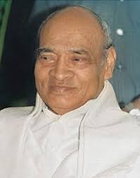

Timeline
1947
1947-48
1948
1962
1965
1975-77
1984
1991
1999
Fun
Facts
Economic
State
Cabinet
Ministers
Prime
Ministers
Home
FUN FACTS
Who became the youngest Prime Minister of India?
Rajiv Gandhi
became the Prime Minister at the age of
40 years and 72 days.
Who became the oldest Prime Minister of India?
Morarji Desai
became the Prime Minister at the age of
81 years and 23 days.
Which Prime Minister took a loan to buy a car for himself?
Lal Bhadhur Shastri
took a loan of Rs.5000
from Punjab National Bank.
Who was the longest serving Prime Minister?
Jawaharlal Nehru
served the nation for
16 years 286 days.
Which Prime Minister couldn't reach Lok Sabha to prove his majority?
Chaudary Charan Singh
and his government fell in 170 days
after Congress(I) withdrew their support.
Which Prime Minister implemented the Mandal Commission?
Vishwanath Pratap Singh
implemented the Commission in 1990.
Upper caste students opposed this.
Which Prime Minister was the Ambassador of
India(Cabinet Level) in Russia?
Indra Kumar Gujral
was the Ambassador of India in Russia
from 1976-1980.
Who is the only lady Prime Minister?
Indira Gnadhi
was also the first female Defence, Home,
External Affairs & Finance Minister.
Which Prime Minister gave a speech in Hindi in the UN General Assembly for the first time?
Atal Bhiari Vajpayee
gave the speech in 1977 as the
External Affairs Minister of India.
Who is the longest serving Non-Congress Prime Minister?
Narendra Modi
after completing 6 years
as the Prime Minister in May 2020.
Who was the only acting Prime Minister in Indian history?
Gulzarilal Nanda
has been the acting PM twice:
1964 and 1967.
Which Prime Minister knew 17 languages?
P. V. Narsimha Rao
knew languages likes both Inidan
regional as well as foreign languages.

Which Prime Minister had an Engineering degree?
H. d. Deve Gowda
holds a Civil Engineering degree
from Madras University.
Who has been the most educated Prime Minister?
Dr. Manmohan Singh
holds a Ph.D. in Economics
from the Oxford University.
Which Prime Minister never held any political position expect Party President?
Chandra Shekar Singh
was the Party President
of Janta Party 1977.